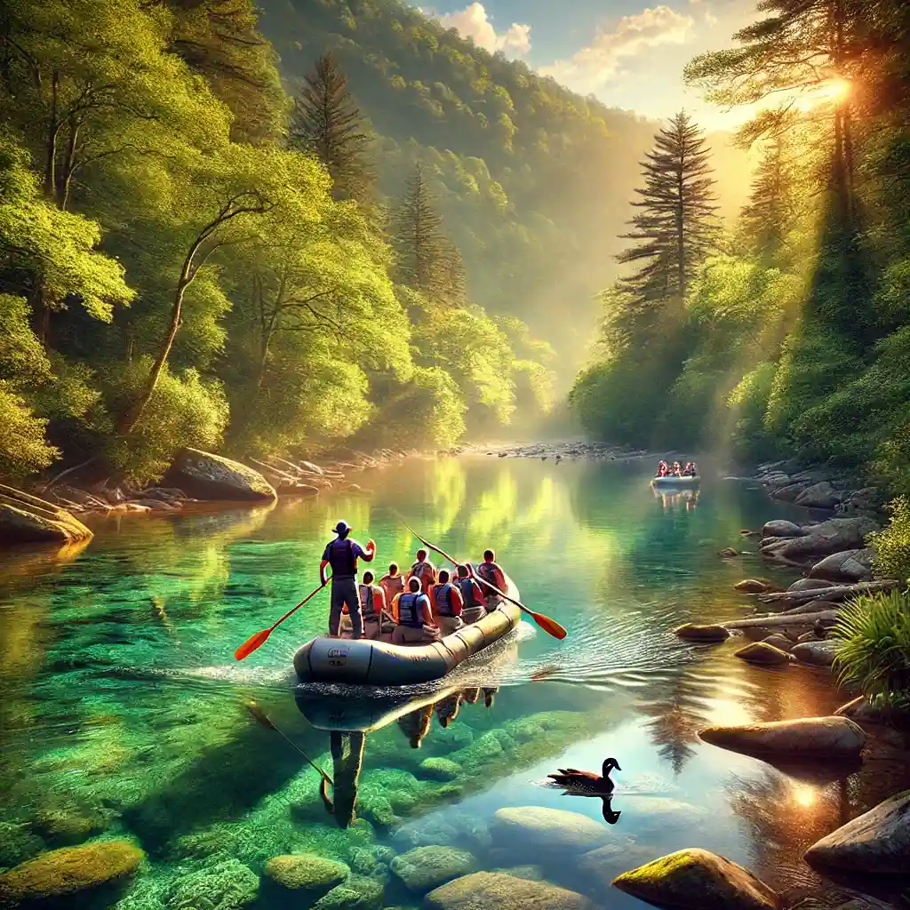
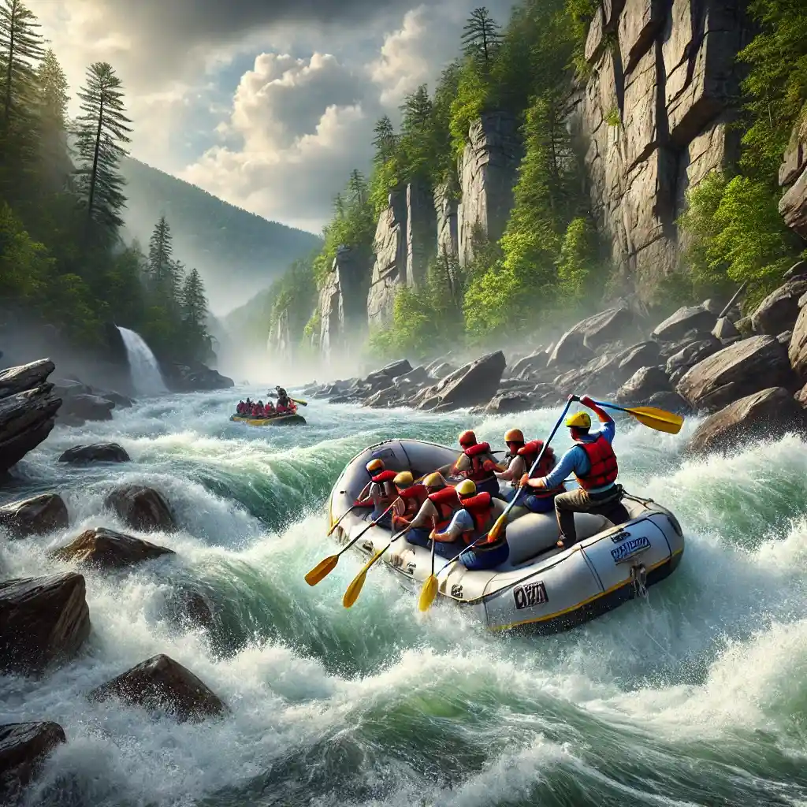

Chart Your Course: Explore Our Signature Expeditions
Get to Know Your Journey
| Journey | Summary | Difficulty | Length | Price (per person) |
|---|---|---|---|---|
| Timberline Tranquil Drift | A laid-back float with plenty of time to relax and explore. | 🟢 Very Easy | 🕒 Half-Day | $45 |
| Edgewater Adventure | Family-friendly with calm stretches and gentle excitement. Great for beginners and kids. | 🟢 Easy | 🕒 Half-Day | $65 |
| Appalachian Rapids | A balance of thrill and scenery. Mid-level rapids for adventurers with some experience. | 🟡 Moderate | 🕓 3/4 Day | $85 |
| Waterfall Expedition | Challenging route with rugged terrain and hidden waterfalls. Suited for experienced rafters. | 🔴 Hard | 🕔 Full-Day | $120 |
| Legends of the Lost River Canyon | Full-day high-adrenaline adventure through narrow canyons and fast rapids. For seasoned thrill-seekers. | 🔴 Very Hard | 🕕 Full-Day (Extended) | $150 |
| PLEASE CALL FOR CURRENT RATES! | ||||
Edgewater Adventure
Embark on the Edgewater Adventure, a perfect blend of tranquility and excitement, ideal for families or those looking to explore the serene beauty of the Appalachian rivers. This leisurely yet thrilling rafting trip takes you through crystal-clear waters, gently flowing through lush, wooded landscapes. As you navigate the winding currents, the towering trees and vibrant wildflowers offer a peaceful backdrop, while the sound of rushing water guides you along the journey.
As you float downstream, keep an eye out for vibrant Wood Ducks, their striking iridescent green and purple heads shining in the sunlight, and their red eyes standing out against the lush surroundings. Often spotted nesting along the banks or gliding gracefully across the water, these ducks add a touch of color and beauty to the journey. The Edgewater Adventure also reveals rare, untouched sections of the river, where the water sparkles over smooth rocks and the surrounding forest creates a quiet, almost magical atmosphere. These peaceful stretches, with their hidden coves and ancient trees, offer a sense of solitude and connection to nature that's hard to find elsewhere.
As you drift through this idyllic landscape, you'll have the chance to relax, connect with family, and create lasting memories. With experienced guides to ensure safety and fun, the Edgewater Adventure offers an unforgettable introduction to the beauty of the Appalachian wilderness, all while embracing the sense of wonder that comes with exploring the great outdoors.
🛶 Schedule Your Adventure! 🛶Appalachian Rapids
Gear up for the Appalachian Rapids, an exhilarating journey designed for those seeking a bit more thrill on the river. This exciting adventure takes you through some of the most dynamic sections of the Appalachian waterways, where the rapids roar and the river's power tests your skills. As you navigate through fast-moving waters and challenging twists, the thrill of the rapids is matched only by the beauty of the surrounding wilderness. The sound of crashing water and the rush of adrenaline will keep your heart racing from start to finish.
Along the way, you'll be treated to breathtaking views that can only be found on this high-energy adventure. Towering cliffs rise dramatically above the river, offering an awe-inspiring sense of scale. Between rapids, the river winds through dense forests and rugged rock formations, with moss-covered boulders and waterfalls tucked into hidden corners. You might catch a glimpse of a deer carefully making its way along the riverbanks, or a red-tailed hawk soaring high above, scanning the water for prey. These moments add a sense of wildness to the experience, reminding you just how untouched this landscape truly is.
The Appalachian Rapids isn't just about the thrill—it's about embracing the raw beauty of nature while challenging yourself in the heart of the mountains. With experienced guides leading the way, you'll conquer the rapids safely while taking in the unforgettable views that make this trip an adventure unlike any other. Get ready for a high-energy, nature-filled experience you won't soon forget.
🛶 Schedule Your Adventure! 🛶Waterfall Expedition
Prepare for the Waterfall Expedition, an awe-inspiring journey that combines the thrill of white-water rafting with the tranquility of nature's most stunning cascades. This trip is ideal for adventurers seeking moderate challenges, as you'll navigate through winding rivers and lively rapids, all while surrounded by the serene beauty of the Appalachian foothills. With experienced guides leading the way, you'll conquer thrilling sections of the river before reaching some of the most impressive waterfalls in the region.
As you float through this breathtaking landscape, you'll encounter towering falls that plunge down rocky cliffs, their mist filling the air as they crash into the river below. The deep, lush forests surrounding the river create an almost magical atmosphere, while the sound of rushing water and birdsong heighten the experience. Keep your eyes peeled for hidden streams feeding into the river, adding even more to the charm of this wild terrain.

During the trip, you'll have the chance to make a memorable stop at one of these breathtaking waterfalls, allowing you to take in the view up close and feel the refreshing mist on your skin. It's a perfect moment to soak up the natural beauty, snap a few photos, and recharge before continuing your adventure downstream. The Waterfall Expedition offers an incredible mix of excitement and serenity, providing a chance to connect with the heart of the Appalachian wilderness in a way few can experience.
🛶 Schedule Your Adventure! 🛶Timberline Tranquil Drift
Set off on the Timberline Tranquil Drift, a perfect escape for those looking to unwind and enjoy a peaceful afternoon on the water. This relaxing yet enjoyable trip is ideal for families, beginners, or anyone wanting to soak in the beauty of nature without the intensity of rapids. The journey winds gently along a calm section of the river, offering a serene yet captivating adventure. With options for both rafting and tubing, you'll have the flexibility to choose your pace and enjoy a leisurely float while surrounded by the pristine beauty of the Appalachian foothills.
As you drift along, you'll be treated to views of towering trees, moss-covered rocks, and crystal-clear water flowing through lush landscapes. A highlight of your trip is a stop at the recreation area tucked along the river, where you can take a break and enjoy a fun ziplining adventure through the treetops. The peacefulness of the river combined with the adrenaline of ziplining creates the perfect balance of excitement and relaxation, making this trip perfect for anyone looking to rejuvenate their spirit.

The Timberline Tranquil Drift is short enough to fit into a single afternoon but packed with enough fun and natural beauty to leave you feeling re-energized and refreshed. Whether you're tubing down the river, rafting with your family, or taking in the sights and sounds of the woods, this trip offers the perfect combination of relaxation and adventure, all wrapped up in one unforgettable experience.
🛶 Schedule Your Adventure! 🛶Legends of the Lost River Canyon
Step back in time on the Legends of the Lost River Canyon trip, an immersive and thrilling adventure perfect for those who crave both history and excitement. This moderately challenging rafting journey takes you through winding, narrow canyons with fast-flowing waters and hidden bends, where the echoes of local folklore seem to come alive. As you paddle through the heart of the canyon, your guide will share fascinating tales of ancient legends and mysterious stories that have been passed down through generations.
The name Lost River Canyon comes from its elusive nature—once thought to be unreachable by settlers, the canyon was hidden for centuries, with the river mysteriously vanishing into the rocky terrain and reappearing in unexpected spots. As you explore this rugged wilderness, you'll encounter steep cliffs that rise dramatically around you, dense forests clinging to the canyon walls, and crystal-clear waters flowing through an area that once seemed lost to time. The sheer beauty and isolation of the canyon make it feel like a world apart, where nature's mystery is always present.
Along the way, your journey will be punctuated by stops to discover hidden caves, secret passageways, and forgotten corners of the canyon, each steeped in their own local legend. From tales of early settlers' struggles to stories of hidden treasures and ancient creatures said to roam the waters, you'll gain a deeper understanding of why the canyon earned its mythical reputation. Keep your eyes peeled for the Appalachian Cougar, a creature said to roam the region's remote mountains and often tied to local folklore, believed to be both a protector and a harbinger of change.
The Legends of the Lost River Canyon trip is a unique mix of adventure and storytelling, offering an unforgettable experience for those eager to explore both the rugged terrain and rich history of this legendary river. Whether you're paddling through swift currents or pausing to hear a legend, this expedition offers a once-in-a-lifetime opportunity to immerse yourself in the mystery and wonder of the Lost River Canyon.
🛶 Schedule Your Adventure! 🛶